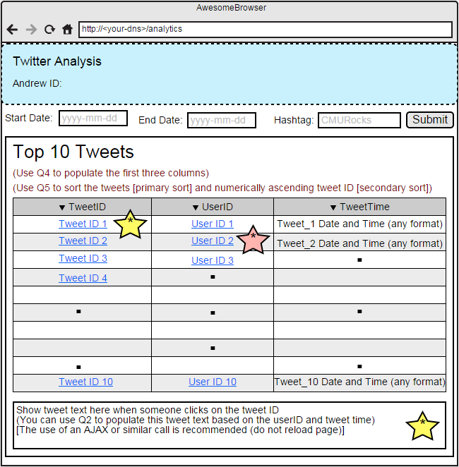

Twitter Analytics on the Cloud
Phase 3
Resource Tagging And Budgets
Tag all of your resources(instances, SSD, Snapshot, AMI) with Key: 15619project and Value: phase3
In addition to the tag above, all instances in your HBase cluster should be tagged with Key: 15619backend and Value: hbase, and all instances with MySQL installed should be tagged with Key: 15619backend and Value: mysql.
You can use any instances for ETL and debugging.
You can use only m1.large or cheaper t1, t2, m1, m3 instances (based on on-demand pricing) for your web service.
You can use any free AMI as your base. You should be building your own AMIs for this project.
Each run (test submitted to the website) must have a maximum budget of $1.75/hour (include on-demand EC2, storage and ELB costs. Ignore EMR, Network, and Disk I/O costs). Even if you use spot pricing, the constraints that apply pertain to on-demand pricing.
You will have a budget $55/team for all the tasks in this phase, including the cost for Live Test
Introduction
In the first two phases, you learned to build a large web service and deal with SQL and NoSQL backends. This has all led towards Phase 3, where you complete building the web service (and possibly a bonus web application). You no longer need to use both HBase and MySQL, but rather, you must choose one.
In the third phase of the 15619Project, you will use a single web service, but support two more complex queries. Your web service has to respond to six types of queries, with data fetched from your backend storage, which you must design and control.
For Phase 3, the backend can be either MySQL or HBase (not both). You must decide based on the six queries and your observations from the first two phases.
Notice the tighter resource constraints above.
A report must be written for this phase that conforms to a template.
Query 1 (Heartbeat and Authentication)
Query 1 for Phase 3 is the same as Phase 1.
Query 2 (Text Cleaning and Analysis)
Query 2 for Phase 3 is the same as Phase 1.
Query 3 (Retweet Buddies)
Query 3 for Phase 3 is the same as Phase 2.
Query 4 (Trending Hashtags)
Query 4 for Phase 3 is the same as Phase 2.
Query 5 (Twitter Rankster)
In Query 5, the request contains one or more userids. Your task is to rank these users based on their statistics in the time interval between the start date and end date inclusively.
You should award points to the users based on these rules:
- +1 per unique tweet sent by the user in the time interval
- +3 per friend (based on the maximum value of user.friends_count in the time interval)
- +5 per follower (based on the maximum value of user.followers_count in the time interval)
For the given date range (both start and end dates are inclusive), print the users in the descending order of total points, and in case of ties, sort the users numerically based on their user.ids.
Request Format
GET /q5?userlist=<userid1>,<userid2>,<userid3>...csv list of userids...,<useridN>&start=yyyy-mm-dd&end=yyyy-mm-dd
Response Format
TEAMID,AWS_ACCOUNT_ID1,AWS_ACCOUNT_ID2,AWS_ACCOUNT_ID3\n
userid1,points_1\n
userid2,points_2\n
userid3,points_3\n
...
Sample Request
GET /q5?userlist=12,16,18&start=2010-01-01&end=2014-12-31
Sample Response
Team,1234-5678-1234,1234-5678-1234,1234-5678-1234 12,12956106 18,78551 16,64471
Query 6 (Hermit Finder)
In Query 6, the requests contain two numbers M and N (M <= N). You should count the number of users where:
- userid is between M and N inclusive,
- has at least one tweet but none of his/her tweets contain location information.
You should only count users by the user.id field rather than the retweeted_status.user.id field. You should check whether the place.name field has a value to indicate whether a tweet has location.
Request Format
GET /q6?m=<userid1>&n=<userid2>
Response Format
TEAMID,AWS_ACCOUNT_ID1,AWS_ACCOUNT_ID2,AWS_ACCOUNT_ID3\n <count>\n
Sample Request
GET /q6?m=0&n=9999999999
Sample Response
Team,1234-5678-1234,1234-5678-1234,1234-5678-1234 55811730
Live Test
This phase will be evaluated using a Live Test. During the Live Test, all web services of all teams will be simultaneously tested. There will be a single Live Test lasting 4 hours.
Your grade will be based on the Live Test as well as the final report. Please see the grading details for more information.
Grading
Phase 3 accounts for 60% of the total grade for this 15619Project. The grade for Phase 3 will be calculated using the result of both Live Tests and the Report.| Value | Target | Weight | Live Test Duration |
|---|---|---|---|
| Warmup | - | 0% | 30 min |
| Q1 | 15000 | 10% | 30 min |
| Q2 | 6000 | 10% | 30 min |
| Q3 | 10000 | 10% | 30 min |
| Q4 | 6000 | 10% | 30 min |
| Q5 | 4000 | 10% | 30 min |
| Q6 | 10000 | 10% | 30 min |
| Mix-Q1Q2Q3Q4Q5Q6 | 2000/1000/1500/1000/500/1500 | 20% | 30 min |
| Report | Excellence | 20% | - |
| Bonus | Click here | 10% | - |
Grading Penalties
The following table outlines the violations of the project rules and their corresponding grade penalties for Phase 3
| Violation | Penalty of the project grade |
|---|---|
| Using more than $55 to complete this phase (including the Live Test) | -10% |
| Using more than $75 to complete this phase (including the Live Test) | -100% |
| Publishing your code publicly (e.g. Public Repository on Github) | -200% at least |
| Copying any code from the Internet, other teams, solutions from previous semesters, or anywhere | -200% at least |
| Any kind of collaboration across teams | -200% at least |
Query Reference Server
To help your team through the 15619Project design, implementation and system test, we provide a query reference server.
Using the query reference server, you can submit queries Q1 - Q6 to study the expected results. Access to this server is restricted to teams who demonstrate progress to the course staff in a weekly meeting with an assigned TA who will be your team's mentor.
Your team should meet the assigned TA mentor every week to talk about your progress and challenges, as well as the contribution of each member of the team. After the weekly meeting with the TA mentor, your team will be handed an authentication token with a limited time validity, which you can use to submit requests against the query reference server.
Bonus
For the bonus part, please create a web page on your front-end that can be used for some simple analytics and visualization based on your web service.
The web page should accept a date range, and a simple string, and perform a Q4 query to populate a list of 10 tweets.
Sort the tweets using the user's rank (use Q5) as the primary sort key, the tweet ID (numerically) as a secondary sort key.
When a tweet ID is clicked, a separate call should be made to Q2 to find and display the text for that tweet.
Figure 1: Hashtag Search and Tweet Finder
When a user ID is clicked, Q3 should be used to generate the network for that user ID.
You may use libraries like d3.js, vis.js, Cytoscape.js, Sigma.js or others
At a minimum, the graph should have
- Directed edges (based on +/-/* relationships from Q3)
- Weighted edges (based on the count from Q3)
Figure 2: Network Visualizer
The bonus (upto 10% of the Phase 3 grade) is awarded based on these weights:
| Item | Percentage of bonus |
|---|---|
| Using Q4 to populate the table with hashtag search results | 10% |
| Using Q5 and TweetID to sort the table as mentioned in the specifications | 20% |
| Using Q2 to display the tweet text when the TweetID is clicked | 20% |
| Using Q3 to generate the network visualization when the UserID is clicked | 30% |
| UX/UI Quality, Performance Optimizations for Fan-Out | 10% |
| Answers in the report | 10% |
Your website will be manually graded by your TA mentor at your request. This can be done till the submission deadline for the report (ideally before the Live Test).
As long as you meet the specifications mentioned above, you are free to add your own bells and whistles. The coolest web applications may be demonstrated to the entire class, and may receive an additional bonus.